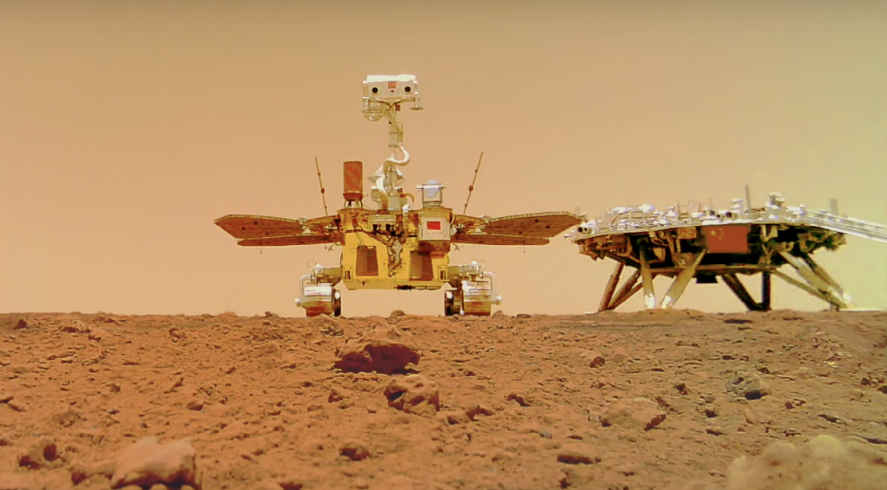
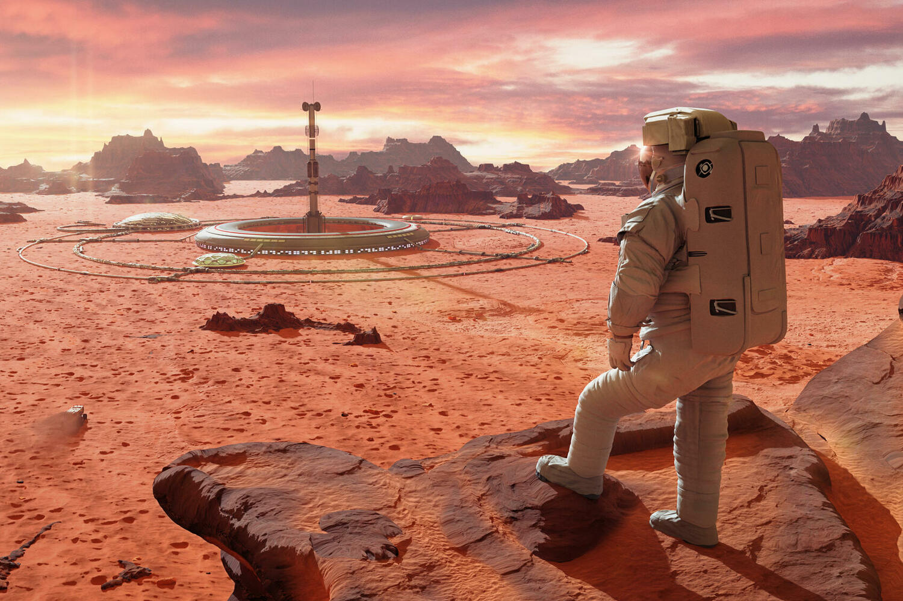

Марс
Марс - четверта за віддаленістю від Сонця і сьома за розміром планета Сонячної системи; маса планети становить 10,7 % Землі. Названа на честь Марса - давньоримського бога війни, що відповідає давньогрецькому Аресу. Також Марс називають червоною планетою через червонуватий відтінок поверхні, що надається їй мінералом маггемітом — γ-оксидом заліза(III).

Марс - планета земної групи з розрідженою атмосферою (тиск на поверхні в 160 разів менший за земний). Особливостями поверхневого рельєфу Марса можна вважати ударні кратери на кшталт місячних, а також вулкани, долини, пустелі та полярні льодовикові шапки на зразок земних.
Марс має двох природних супутників — Фобос і Деймос (у перекладі з давньогрецької — «страх» і «жах», імена двох синів Ареса, які супроводжували його в бою), які відносно малі (Фобос — 26,8×22,4×18,4 км, Деймос - 15×12,2×10,4 км) і мають неправильну форму.
Астрономічні характеристики
Мінімальна відстань від Марса до Землі становить 55,76 млн км (коли Земля точно між Сонцем і Марсом), максимальна — 401 млн км (коли Сонце точно між Землею і Марсом). Середня відстань від Марса до Сонця становить 228 млн км (1,52 а.е.), період обігу навколо Сонця дорівнює 687 земним суткам. Орбіта Марса має досить помітний ексцентриситет (0,0934), тож відстань до Сонця змінюється від 206,6 до 249,2 млн км. Нахилення орбіти Марса до поверхні екліптики дорівнює 1,85°. По лінійному розміру Марс практично рівно вдвічі менший за Землю. Його середній екваторіальний радіус оцінюється як 3396,9 ± 0,4 км, або 3396,2 ± 0,1 км (53,2 % земного).

Період обертання планети близький до земного - 24 години 37 хвилин 22,7 секунди (щодо зірок), довжина середньої марсіанської сонячної доби становить 24 години 39 хвилин 35,24409 секунди, що всього на 2,7% довше земної доби. Для зручності марсіанську добу називають «солами». Марсіанський рік дорівнює 668,59 сола, що становить 686,98 земної доби.
Сила тяжіння біля поверхні Марса становить 39,4 % від земної (у 2,5 рази слабше). Оскільки невідомо, чи є така сила тяжкості достатньою, щоб уникнути тривалих проблем зі здоров'ям, для довготривалого перебування людини на Марсі розглядаються варіанти створення штучної сили тяжіння за допомогою важких костюмів або центрифуг, що забезпечують схоже із земним навантаження на скелет.
Дослідження Марса
Для систематичного дослідження Марса були використані можливості космічного телескопа «Хаббл», при цьому були отримані фотографії Марса з найвищою роздільною здатністю коли-небудь зроблених на Землі.
Дослідження Марса космічними апаратами є ключовою частиною нашого розуміння цієї планети. Починаючи з перших місій "Марінер" у 1960-х роках, дослідження Марса стали одним із головних напрямів космічної дослідницької діяльності. Радянські дослідження, такі як програми "Марс" та "Фобос", зробили значний внесок у вивчення планети, включаючи перші м'які посадки на поверхню. Американські місії, починаючи з "Вікінгу" і закінчуючи сучасними місіями "Perseverance" та "Ingenuity", також мають ключове значення для розширення наших знань про Марса. Орбітальні місії, такі як "Марс Одіссей", "Марс-експрес" та "MAVEN", продовжують збирати дані про клімат, атмосферу та поверхню Марса. Місії на поверхню, такі як "Curiosity" та "Zhurong", проводять дослідження на місці та досліджують геологію та хімію планети. Все це разом складає велику картину досліджень Марса, яка продовжує розвиватися з кожним новим космічним апаратом та місією.

Колонізація Марса
Близькість Марса і відносна його подібність із Землею породили низку фантастичних проектів терраформування та колонізації Марса землянами у майбутньому.
Марсохід «К'юріосіті» виявив відразу два джерела органічних молекул на поверхні Марса. Крім короткочасного збільшення частки метану в атмосфері, апарат зафіксував наявність вуглецевих сполук у порошкоподібному зразку, що залишився від буріння марсіанської скелі. Перше відкриття дозволило зробити інструмент SAM на борту марсоходу. За 20 місяців він 12 разів виміряв склад марсіанської атмосфери. У двох випадках — наприкінці 2013 року та на початку 2014-го — «К'юріосіті» вдалося виявити десятикратне збільшення середньої частки метану. Цей сплеск, на думку членів наукової команди марсоходу, свідчить про виявлення локального джерела метану. Чи має він біологічне або інше походження, фахівці стверджувати не можуть внаслідок нестачі даних для повноцінного аналізу.